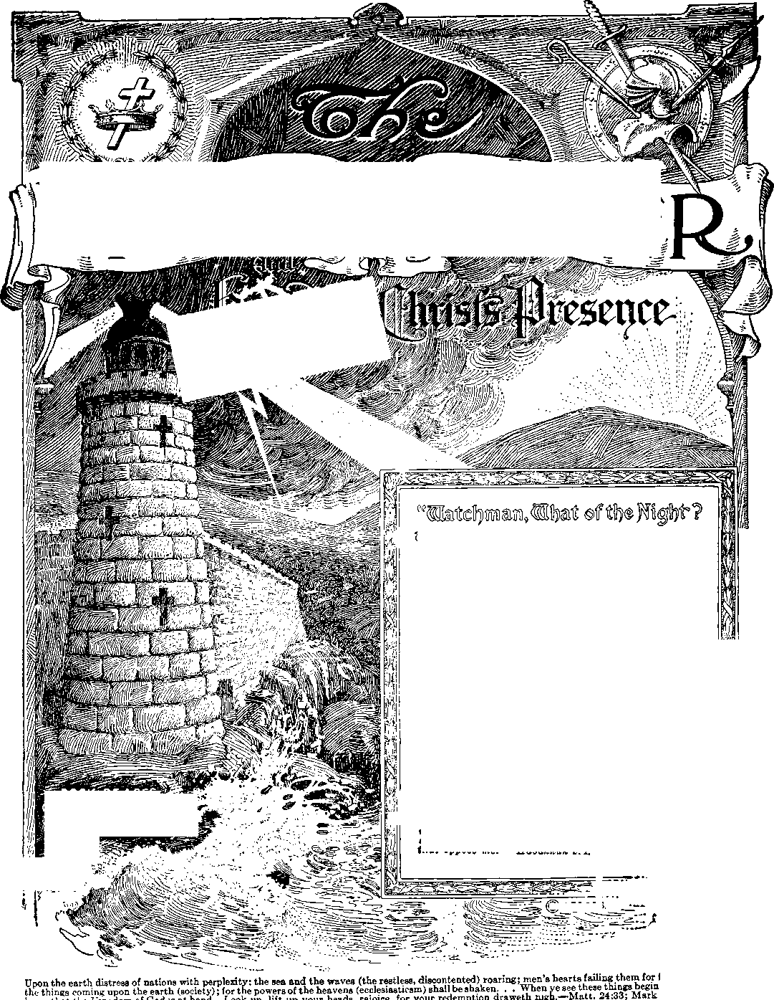

••
!?)
An Ideal Government
The Great Issue........
Further Provision ....
;no.9
IA
.131
fear and for looking to i to come to pass, then 13:29; Luke 21:25-31.
...135 ...136
...137
...138
...139
...140
...141
...142
...130
...130
...130
Q?®yforatag audl ais@F-Isaiaty
Vol. XLV
Semi-Monthly
Anno Mundi 6052 May 1, 1924
CONTENTS
- ROCK OFAGES;
Other foundation can%rf 'no m.an lay
A .RANSOM'FOfijAL
Rewards of Kings...................................
Man’s Profit ...........................................
Prai er-Meeting Text Comments.........
International C nvention .....................
Annual Request for Pilgrim Visits... The Babylonian Exile of Judah.........
God’s Purposes Outworking.................
Ezekiel Encourages the Exiles.........
Lithuanian Watch Tower......................
German Convention Canceled...............
Memorial Reports Desired Promptly..
“I will stand upon my watch and will set my foot upon the Tower, and will watch to see what He will eay unto me, and what answer I shall make to them that oppose me.”—Habakkuk 2:L
Qwt.b &TS.
THIS JOURNAL AND ITS SACRED MISSION
VIWIS journal Is one of the prime factors or instruments in the system of Bible instruction, or “Seminary Extension”, now being JL presented in all parts of the civilized world by the Watch Tower Bible & Tract Society, chartered A. D. 1884, “For the Promotion of Christian Knowledge”. It not only serves as a class room where Bible students may meet in the study of the divine Word but also as a channel of communication through which they may be reached with announcements of the Society’s conventions and Of the coming of its traveling representatives, styled “Pilgrims”, and refreshed with reports of its conventions.
Our “Berean Lessons" are topical rehearsals or reviews of our Society’s published Studies most entertainingly arranged, and very helpful to all who would merit the only honorary degree which the Society accords, viz., Verbi Dei Minister (V. D. M.), which translated into English is Minister of God’s Word. Our treatment of the International Sunday School Lessons is specially for the older Bible students and teachers. By some this feature is considered indispensable.
This journal stands firmly for the defense of the only true foundation of the Christian’s hope now being so generally repudiated —redemption through the precious blood of “the man Christ Jesus, who gave himself a ransom [a corresponding price, a substitute] for all”. (1 Peter 1:19; 1 Timothy 2 : 6) Building up on this sure foundation the gold, silver and precious stones (1 Corinthians 3: Ills ; 2 Peter 1:6-11) of the Word of God, its further mission is to “make all see what is the fellowship of the mystery which . . .has been hid in God, ... to the Intent that now might be made known by the church the manifold wisdom of God”—“which in other ages was not made known unto the sons of men as it is now revealed”.—Ephesians 3:5-9,10.
It stands free from all parties, sects and creeds of men. while it seeks more and more to bring its every utterance into fullest subjection to the will of God in Christ, asfexpressed in the holy Scriptures. It is thus free to declare boldly whatsoever the Lord hath spoken—according to the divine wisdom granted unto us to understand his utterances. Its attitude is not dogmatic, but confident; for we know whereof we affirm, treading with implicit faith upon the sure promises of God. It is held as a trust, to be used only in his service; hence our decisions relative to what may and what may not appear in its columns must be according to our judgment of his good pleasure, the teaching of his Word, for the upbuilding of his people in grace and knowledge. And we not only invite but urge our readers to prove all its utterances by the infallible Word to which reference is constantly made to facilitate such testing.
TO US THE SCRIPTURES CLEARLY TEACH
That the church is “the temple of the living God”, peculiarly “his workmanship” ; that its construction has been in progress throughout the gospel age—ever since Christ became the world’s Redeemer and the Chief Corner Stone of his temple, through which, when finished, God’s blessing shall come “to all people”, and they find access to him.—1 Corinthians 3: 1G, 17; Ephesians 2 :20-22; Genesis 28:14; Galatians 3 : 29.
That meantime the chiseling, shaping, and polishing of consecrated believers in Christ’s atonement for sin, progresses; and when the last of these “living stones”, “elect and precious,” shall have been made ready, the groat Master Workman will bring all together in the first resurrection; and the temple shall be filled with his glory, and be the meeting place between God and men throughout; the Millennium.—Revelation 15 : 5-8.
That the basis of hope, for the church and the world, lies in the fact that “Jesus Christ, by the grace of God, tasted death for every man,” “a ransom for all,” and will be “the true light which lighteth every man that cometh into the world”, “in due time”.— Hebrews 2; 9 ; John 1: 9 ; 1 Timothy 2:5, G.
That the hope of the church is that she may be like her Lord, “see him as he is,” be “partakers of the divine nature’,’ and share his glory as his joint-heir.—1 John 3:2; John 17:24; Romans 8:17; 2 Peter 1:4.
That the present mission of the church is the perfecting of the saints for the future work of service; to develop in herself every grace; to be God’s witness to the world; and to prepare to be kings and priests in the next age.—Ephesians 4:12; Matthew 24: 14 ; Revelation 1:6; 20 : 6.
That the hope for the world lies in the blessings of knowledge and opportunity to be brought to all by Christ’s Millennial kingdom, the restitution of all that was lost in Adam, to all the willing and obedient, at the hands of their Redeemer and his glorified church, when all the wilfully wicked will be destroyed.—Acts 3:19-23; Isaiah 35.
Published By
WATCH TOWER.BIBLE frTRACT SOCIET/
18 CONCORD STREET O 0 BROOKLYN, NY. U SA
Foreign Offices ; British: 34 Craven Terrace, Lancaster Gate, London W. 2 ; Canadian 38-40 Irwin Avenue, Toronto, Ontario; Australasian: 495 Collins St., Melbourne. Australia; South African; 6 Lelie St., Cape Town, South Africa.
Please Address the Society in Every Case.
YEARLY SUBSCRIPTION PRICE: United States, $1.00; Canada AND MlSCELLANEOLS FOREIGN, $1.50 J GREAT BRITAIN, AUSTRALASIA, and South Africa, 7s. American remittances should be made by Express or Postal Money Orders, or by Bank Draft. Canadian, British, South African, and Australasian remittances should be made to branch offices only. Remittances from scattered foieign territory may be made to the Brooklyn office, but by International Postal Money Orders only. (Foreign. translations of this journal appear in several languages)
Editorial Committee: This journal is published under the supervision of an editorial committee, at least three of whom have read and approved as truth each and every article appearing in these columns. The names of the editorial committee are: J. F. Rutherford, W. I'i. Van Amburgh, J. Hemery, R. H. Barber, C. K Stewart. Terms to the Lord's Poor: All Bible students who, by reason of old age or other inrirmity or adversity, are unable to pay tor this journal, will be supplied tree if they send a postal card each May stating their case and requesting such provision. We are not only willing, but anxious, that all such be on our list continually and in touch with the Berean studies.________________________________
Motice to Subscribers: We do not, as a rule, send a card of acknowledgment for a renewal or for a new subscription. Receipt and entry of renewal are indicated within a month by change in expiration date, as shown on wrapper label.
Entered as Second Class Matter at Brooklyn, N.Y. Postoffice., Act of March 3rd 1879.
BETHEL HYMNS FOR JUNE
|
Sunday |
1 |
139 |
S |
101 |
15 |
21 |
22 |
210 |
29 |
194 |
|
Monday |
2 |
15 |
9 |
126 |
16 |
67 |
23 |
197 |
30 |
232 |
|
Tuesday |
3 |
283 |
IO |
329 |
17 |
30 |
24 |
327 | ||
|
Wednesday |
4 |
61 |
11 |
201 |
IS |
282 |
25 |
298 | ||
|
Thursday |
5 |
294 |
12 |
127 |
19 |
260 |
26 |
259 | ||
|
Friday |
6 |
48 |
13 |
227 |
20 |
312 |
27 |
235 | ||
|
Saturday |
7 |
S8 |
14 |
135 |
21 |
132 |
28 |
251 |
THE LITHUANIAN WATCH TOWER
We wish to inform the friends that the May and June issues of the Lithuanian Watch Tower will contain a series of treatises on man, especially adapted for the public and very suitable for sample copies. Price 5<i a copy. Colporteurs and class workers now have their opportunity to introduce this Watch Tower to the Lithuanian people.
GERMAN CONVENTION IS CANCELED
The German Convention which was to have been held in Cleveland, May 30 to June 1. is canceled, on account of the International Convention which will be held in Columbus, Ohio, July 20-27. Announcements later.
MEMORIAL REPORTS DESIRED PROMPTLY
It is desired that we receiie the reports of the Memorial attendance as promptly as possible. Kindly assist us in this, so that the compiling and publishing of the report will not be delayed.
SERVICE AT BETHEL
In order that our questionnaires might be up to date, we shall be pleased to send blanks to any brothers or sisters who could render service at Bethel. Young men, unencumbered, are preferred. There is also a limited amount of service for sisters desiring to do housework.
WATCH TOWER BEREAN STUDY
Quite frequently we have a letter from a class, stating that they ha\e a special Berean study on the leading article in The Watch Tower, and reporting a great blessing from the study. We recommend such a study, believing that it will be helpful to all who participate in it.
Vol. XLV May 1, 1924 No. S
"And in the days of these kings shall the God of heaven set up a kingdom, which shall never be destroyed: and the kingdom shall not be left to other people, but it shall break in pieces and consume all
these kingdoms, and it shall stand for ever.”—Daniel 2:44-
MANY of The Watch Tower readers have been for years in the narrow way. Many of them have drunk deep at the fountain of present truth and have reveled in its exhilarating and blessed influence. Some one has said: I am so happy that there is no place of eternal torment, and that none of my loved ones will have to spend eternity there. Another has said: I am so joyful to have a foregleam of the blessedness of heaven with the prospects of being there. Still another has said: I am so thankful that there is a chance for me to get to heaven, and if only I can slip in at the back door I shall be satisfied.
2While these expressions of sentiment are not improper, yet there is a measure of selfishness in each one of them. To receive the good things and enjoy them alone is selfishness, at least in a degree. To receive the truth and limit its joys to personal benefits and blessings is somewhat selfish.
3God is love. Love is the perfect expression of unselfishness. He who grows like the Lord must develop unselfishness even in things pertaining to the truth. As the Christian progresses toward his glory home he should expand in love, grow more liberal in heart and broader in mind. He will learn that the truth cannot be received and held like as a sponge absorbs and holds water. He will see that in God’s great plan there is a definite purpose, and he will desire to enter fully into the spirit thereof. As he grows in appreciation of the truth he will become more Godlike; and this will mean that he will want to do, and try to do, something for others. In no other way can one develop the spirit of perfect love.
4It was the perfect expression of unselfishness that caused Jehovah to give the dearest treasure of his heart, his beloved Son, that man might benefit therefrom. It was a perfect expression of unselfishness that led Jesus to the cross. A perfect expression of unselfishness involves some sacrifice. This we call love. No one will be forever with the Lord unless that one is perfected in love.
’The royal family of heaven is God’s family, all the members of which must possess his spirit. “God is love; and he that dwelleth in love dwelleth in God, and God in him.” (1 John 4:16) This means that the creature who abides in the same spirit or disposition that God has and possesses will be perfect in love. “Hereby know we that we dwell in him, and he in us, because he hath given us of his spirit.”—1 John 4:13.
6These scriptures prove that the Christian who receives God’s approval must receive the truth, not in a narrow-minded or selfish manner, but with a broad and liberal view of glorifying God, entering fully into tha spirit of the Lord; and must appreciate the fact that God will use the truth for the blessing of all the familiej of the earth. It means to ascertain God’s purpose in formulating his plan and to then enter fully into tha spirit of the Lord, cooperating with him, insofar as ii is possible, in the execution of his plan. To do thii means much more than merely to drink deep at thf precious fountain of truth, and then to indulge in dreams of the personal happiness that will result from the emoluments of the kingdom.
GOD’S PURPOSE
’It has been the purpose of Jehovah from the beginning of creation that man should have on earth an ideal government. For centuries God has been working out his plan to that end. The Bible, and the extraneous evidences, are cumulative that a climax in the progressive steps of his great plan is now at hand. Blessed is the man who can now see and appreciate the fact, and can enter fully into the spirit of that divine arrangement.
8An ideal thing is that which is perfect, supremely excellent; hence very desirable. An ideal government is a supremely excellent and perfect government. Because such a government seems impossible to man after long experience, he says: ‘An ideal government exists and can exist only in the imagination of men. It is unattainable and therefore impossible.’ With God it is not impossible; for in his due time such a government among men is absolutely certain. An abiding faith that
this conclusion is correct, and that faith supported by perfect love, make the Christian a power in the hand of the Lord. When the Christian, under the supervision of the Lord, exercises that divinely given power, he is approximately living up to his privileges.
THE GREAT ISSUE
sThe coming ideal government, and our attitude toward it, is the great issue. The word issue, as here used, means the vital question for determination. It means the point to be decided. The question for determination or point to be decided, the paramount issue before the minds of men, is: Satan’s kingdom versus God’s kingdom. Shall Satan continue to be the “god of this world” and rule with an oppressive hand? Or has the time come for the great God of heaven to set up an ideal government on earth? This is the great issue in the campaign that is now on. Let every new creature settle that in his mind now. To the members of the new creation there is no middle ground in this campaign. There is no compromise. He must unreservedly take the side of the Lord or lose what he has. No real Christian can be passive in this campaign. He must be active as opportunities are afforded. He must be either cold or hot. To be lukewarm will not do. (Revelation 3:16) The more quickly every consecrated one gets this fact thoroughly fixed in his mind and heart, the better for him.
10Zeal means heated. It is translated from the word which means to boil. It means ardor for a cause, an enthusiastic fervor and devotion to that cause. The zeal peculiar to the Lord’s house is the boiling, enthusiastic fervor and devotion for the Lord’s kingdom, for his ideal government for man. This is the time when zeal for the kingdom is required. In order to exercise that zeal peculiar to the Lord’s house we must understand and appreciate the purposes of the Lord. For this reason we here recount some of them.
MAN’S DESIRE
“Adam, in Eden, was perfect and enjoyed a perfect home. Peace and happiness reigned there supreme. Before ambition was exercised by Lucifer Eden was an ideal place. Man there had an ideal government. There were no expressions of hatred or ill will; there was no oppression there, no profiteering; there was no selfishness ; there was no evil of any kind. The climate was all that could be desired; there were no storms from without, nor tempests to disturb man’s serene and inmost calm. The birds warbled their sweet songs; beasts gave expression to contentment and peace; flowers shed their sweet fragrance of perfume on the morning air. The trees waved their arms to welcome the sweet-scented zephyrs, and clapped their hands together for gladness; and the fields were joyful, and all that was therein. Man was monarch of all he surveyed, and he walked and communed with God.
'"Then selfhhness. the very opposite of love, came to the fore. An ambitious desire arose in Lucifer’s breast; and to gratify that selfish desire he resorted to fraud, lying, deceit, and murder. The result was that man lost his home, his ideal government, his peace of mind, his joy and happiness; and from then till now the cruel and relentless storms of suffering and death have beaten upon his head. The whole creation has since hung its head and wept.
“Upon whom is the blame properly laid? A selfish creature. Selfish ambition overleaped itself and wrought havoc, in the universe. From Eden until now there has been uppermost in the mind and heart of man a desire to return to the ideal conditions. He has desired life, liberty, and happiness. He has sought out devices and made every possible effort to satisfy this longing and desire. Reformation has followed reformation; and when every effort of the noble-hearted reformers had failed, others have taken up something to revive a hope in man’s heart that some day there would be a satisfying condition. Man has tried an absolute monarchy, a representative monarchy, a democracy, and other forms of government, hoping to find one that would prove satisfactory; but always without success.
“Now after 6,000 years, the thinking men of the world stand aghast at the conditions that exist politically, financially, socially, and religiously. They are indeed in perplexity and in distress. Not only do they fear for the things they see coming upon the earth, but that fear has grown to such proportions that practically every one has turned to an unusual degree of selfishness; and every man of the world is for himself without regard to the general welfare of others. There is great wickedness in high official places; disloyalty and unfaithfulness in public service. The hope of the people for a stable government has been dashed to the ground. Despair has taken hold upon many; and their cry is: “There is no peace; there is no settlement; we can do nothing.” Man has approached his extremity because selfishness has gone to seed and the crop of hatred and malice is being reaped. Foreknowing the end from the beginning, God has timed the outworking of his plan so that man’s extremity is Jehovah’s opportunity.
GOD’S PROVISION
15Jehovah permitted man to take his own course that he might fully and completely learn the needed lesson. During all these years his plan for man’s benefit has been majestically moving forward. The unselfishness of Jehovah was perfectly expressed in his words to Abraham, when he said: “In thy seed shall all the families of the earth be blessed.”
“Looking to that time when the seed of promise would be greatly tested as to faitH and in order that these might fully understand and appreciate the unchangeableness of his Word, Jehovah renewed that promise to Abraham and bound it with his oath. (Hebrews 6: 17,18) The Lord knew that in this trying campaign there would be much to shake the hope of those walking in faith. The Apostle, therefore, assures us that God bound this promise with his oath in order that we might have a greater hope, “which hope we have as an anchor of the soul both sure and steadfast and which entereth into that within the vail.” It was love that caused Jehovah to do this. It was another perfect expression of his unselfishness.
17In the course of time the beloved Logos was sent away from the courts of heaven to take upon him the form and nature of selfish man. For thirty-three and one-half years he mingled with imperfect and selfish men. the most despicable of whom were the hypocritical clergy of his day. Jesus was misunderstood by his friends among men, and misrepresented by his enemies. He suffered from both. Charged with almost everv crime known to the criminal calendar, he was subjected to a wicked and brutal trial, unjustly condemned and ignominiously put to death. The experience cost Jesus even-thing that perfect man could enjoy, and above all the loss, for a time, of fellowship with the Father. His was the supreme sacrifice.
lsThe experience cost Jehovah the dearest treasure of his heart. Here again we find in Jesus and in Jehovah the perfect expression of unselfishness, which is called, and is, true love. And why? The answer is, In order that man might live and in due time enjoy the blessings of an ideal government. It was about this government that Jesus spoke at the beginning of his ministry. It was that ideal government which constituted the burden of his message during his earthly career. He left with his followers the command that they should continue to preach the coming of that blessed and ideal government.
19Many Christians have thought that to build character was. and is, the chief thing for them to do, ignoring the interests of the kingdom. Be it known that no one will ever be perfected in character and be of the kingdom who does not appreciate the importance of the kingdom. This is particularly true from this time forward. The kingdom of heaven is at hand. It is the great issue.
FURTHER PROVISION
2GIn the long-distant pa.-t God ordained that there should be in the kingdom and associated with his beloved Son, the Head thereof, 144,000 who should be kings and priests and reign with Christ, these to constitute the royal family of heaven. Why should he take these from amongst men? Herein we find again a perfect expression of unselfishness, both on the part of Jehovah and on the part of Jesus, that God should invite imperfect men to share the glories and blessings of that kingdom. It was love that made this provision.
2’The kingdom of heaven, the ideal government, Jesus always held before the mind of his hearers. His faithful disciples walked with him, and talked with him about that government. He made them to understand that he was going away to prepare a place for them, and that later he would return and receive unto himself his loyal followers. During his absence he committed to the keeping of his true and faithful servants the interests of that kingdom, charging them to look well to those interests. Anxious to know when that blessed time would come when the Lord would return and when the old world would end, his disciples propounded to him the question recorded in Matthew 24: 3.
220ur Lord answered, and his answer was intended to thrill the faithful watchers who should observe its fulfilment. He said: “When that time comes the nations will become angry, and nation will rise against nation, kingdom against kingdom, and the whole world will bo subjected to sorrow; the war, famine, and pestilence will be the beginning of sorrows? He further said that then there would be a great falling away from the faith, there would be persecution of Christians, many would become offended and hate one another; that the nations and peoples would be in distress and perplexity; and that men’s hearts would fail them for fear. He foresaw and foreknew that the rulers of earth, acting under the super-mind of Satan, would be making a desperate effort to hold the old order together, and to this end would resort to combinations, leagues, and all sorts of agreements, ignoring the Lord; but that all of these would fail.
23And then would come to pass the promise of God, made through his prophet, saying, “And in the days of these kings shall the God of heaven set up a kingdom, which shall never be destroyed: and the kingdom shall not be left to other people, but it shall break in pieces and consume all these kingdoms, and it shall stand for ever.”—Daniel 2: 44.
“Kings, here referred to, are the rulers, the governing factors of the earth. These are composed of the political, commercial, and ecclesiastical strong ones of the earth, directed by their invisible god. The declaration of Jehovah is that such shall have no part in the new government. It will be a kingdom, through his Christ; and it shall not be left to other people. He will not take the advice of the worldly ones, nor permit them to participate in his kingdom. None will be in that kingdom except those who shall be on the Lord’s side.
25This kingdom of the Lord’s shall be a complete victory for righteousness and a triumph for unselfishness. It will not be a temporary government, but one that will stand forever and bring every desire of every honest heart. It is the will of God that the evidences of the fulfilment of the prophetic utterance of Jesus shall be a signal to the faithful ones to mount the battlements of Zion and cry aloud: The kingdom of heaven is at hand. To all in Zion now comes the command of the Captain of Jehovah’s host, saying, This gospel of the kingdom shall be proclaimed in all the world for a witness unto all the nations, and then the end shall come.
THE CHRISTIAN’S PRIVILEGES
26The privileges now to be enjoyed by the true follower of Christ cannot be overstated. Yea, no privileges equal thereto have ever been the portion of any creature in heaven or on earth. The deeper our appreciation of these privileges, the better equipped shall we be for the warfare. Christians, in other times of the age, have enjoyed the great privilege of being ambassadors for Christ; but the Christian now has that privilege and more. It is his privilege now to make known to the world that the ideal government is here and is being put in control of earth’s affairs.
27Abraham had the promise that the kingdom would be provided for the blessing of man. The prophets had visions of the coming thereof and wrote down these visions. The Psalmist composed songs of its coming blessings and sang them to the praise of the Lord. Jesus opened the way, and told of its coming and the blessings it would bring. The apostles dwelt upon the qualifications necessary and the rewards of those who would be in the kingdom. But now the Christian, who is of the feet of him, is commanded to say unto Zion: "Thy God reigneth.” (Isaiah 52:7) With authority can he speak; for this command comes from the Lord. These are they who bring good news of good, who publish peace, and tell of God’s salvation for the people, and inform the world that millions now living will never die. Such a privilege was never before granted to any creature. Are we showing a proper appreciation of that privilege?
QUALIFICATIONS OF KINGS
“Disloyalty to God cost Adam his life and all blessings incident thereto. Loyalty will be required of every creature who will be granted life on any plane. Loyalty to the very core is the chief qualification of those who shall inherit the kingdom and be members of the royal family of God. Loyalty cannot be proven by merely feeding upon the Word of God, mentally enjoying the same, and remaining in a passive attitude, waiting to be taken to heaven. This is the hour of real activity; and the great issue before us demands that each one assert himself positively and actively for the King. All must make a sacrifice who enter the race for a place in the kingdom; and all who enter the kingdom as overcomers must do more than sacrifice. They must obey. “To obey is better than sacrifice.”—1 Samuel 15:22.
29Jesus said: “Whosoever therefore shall humble himself as this little child, the same is greatest in the kingdom of heaven.” (Matthew 18:4) Humble here clearly means to be obedient. The characteristics of a good child are these: Freedom from ambition and rivalry, confidently trusting in its leader; teachableness and loving obedience. That is what Jesus meant. St. Peter announced the same rule when he said: “Humble yourselves therefore under the mighty hand of God, that he may exalt you in due time.”—1 Peter 5: 6.
30Some content themselves by appearing to be sanctified, meek, quiet, and inactive, believing that such an attitude, and the constant feeding upon the Word of God by studying it, will assure them a place in the kingdom. In such a course there is a large measure of selfishness; for such an attitude of inactivity is looking and hoping only for self-ease, self-comfort, self-blessing, and self-joy. With such it is impossible to be perfect in love. There can be no perfect expression of love without a sacrifice, and an earnest desire and activity to do good unto others.
31Concerning such qualifications Jesus said: “Not every one that saith unto me, Lord, Lord, shall enter into the kingdom of heaven; but he that doeth the will of my Father which is in heaven.” (Matthew 7:21) To do the will of God means to be diligent, active, and energetic. It means to possess and exercise that zeal peculiar to the Lord’s house, possessed and exercised by the Lord himself. (Psalm G9: 9) Such zeal means a fervent ardor for the Lord and his ideal government. It means that one will be actively engaged in the campaign as opportunity is offered.
32What then can I do? you ask. Jesus answers: Tell the good news to the people of all nations as a witness before the end comes. Tell it now. Tell it by word of mouth; preach it to the people as you have opportunity; tell it out by the printed page by placing in the hands of the people the books and other literature containing the message of the kingdom. The Lord has provided the printing presses and other machinery to print and manufacture the books in the various languages, and offers an opportunity to the consecrated to enter actively into the campaign on the side of the Lord. He has provided the way for some to be colporteurs, some sharpshooters, some helpers in the classes, some volunteers to put the message into the hands of the people. He has brought to light at the proper time the radio broadcasting apparatus and provided for the sending forth of the message in this way. He has opened a way for every one who is on his side to do something in the campaign. Hence there is no just cause or excuse for any who really love the Lord to remain silent now. Itemember those who went with Gideon and bowed down, burying their faces in the brook to drink. Be not of that kind, but be of those who dipped the water in their hands and lapped it like a dog, while earnestly watching for opportunities to glorify the King.
THE CAMPAIGN
“Remember, brethren, we are now engaged in the greatest campaign of all time. Let us acquit ourselves as becomes the true representatives of the great and new government. Call to mind the campaign in worldly politics, how some have engaged in times past, how they endured hardships in behalf thereof. How many times have you carried a torch, marched in the ranks or rode in a wagon, waved a flag and shouted and urged the people to vote? How many times have you made a political speech, and diligently distributed literature showing the people what you believed to be the proper way to vote? And why did you do it? If you were honest you did it because you believed that the officers you were trying to elect, the government you were trying to inaugurate, would help to bring about a better condition amongst the people in general. Those efforts failed because of the imperfections of man.
34Now we are enlisted in a campaign of the Lord for his ideal government. We are not in doubt as to the result. We know that his kingdom will win. We know that his will be an ideal government and will bring the very things for which man has hoped and watched and prayed, lo, these many centuries past. Do you possess the spirit of the Lord? Have you perfect love in your heart? If so, then with a burning zeal for his cause you will go forth to do your little part, not because he needs any of us but because we need the opportunitv to prove our loyalty and our love. Remember that the chief qualification of those who will be kings and priests unto God is love. Remember that love is the perfect expression of unselfishness. Remember that Jesus gave us the example and that we must follow in his steps. The way for us now to give expression to unselfishness is joyfully to announce the kingdom that will bring lasting blessings to mankind. This must be done with diligence if we would have an abundant entrance into his kingdom.—2 Peter 1: 3-11.
35How can any one in present truth, who appreciates the situation, remain silent and inactive? Let no one deceive you; and if you are to be of the elect you will not be deceived into believing that you can be inactive and please the Lord. The Lord has promised that the elect shall not be deceived in doctrine. (Psalm 125: 3; Isaiah 52:8) There is a manifest attempt on the part of the adversary to deceive by inducing the soldiers of the cross to remain inactive and silent.
36In ages past governments have risen only to fall again. Now the Church is engaged in a campaign for the ideal government which is certain and which will endure forever. Having this in mind, and referring to the duty of the Christian at this time, St. Paul wrote: “Wherefore we receiving a kingdom which cannot be moved, let us have grace, whereby we may serve God acceptably with reverence and godly fear.” (Hebrews 12:28) This means that seeing we are receiving the long-promised kingdom of the Lord, that ideal government, let us show forth our gratitude, and joyfully deport ourselves in a manner in keeping with the blessed privileges of that kingdom. Let the divine influence be so reflected in our lives that we may show that we are indeed grateful to God and to the Lord Jesus that we are permitted to participate in announcing this blessing to the people. To serve God acceptably now means that we will enter into the very spirit of his kingdom and announce it with joy.
37The spirit of that kingdom is love, and love is the perfect expression of unselfishness. This can be manifested only by a sacrifice, and service entails sacrifice. How could we possibly serve acceptably and remain idle or inactive? Service will mean a sacrifice of worldly ease, wealth, and comfort. It will cost us much, but it is worth more than it costs. If we have started to serve the Lord, we cannot stop and still be pleasing to him. Do not for one moment think that what you did last year will win for you a place in the kingdom. Our victory will bo complete at the end provided we do not relax. (Galatians 6:9) This is no time for quitters. Jesus made this clear when he said: “No man, having put his hand to the plough, and looking back, is fit for the kingdom of God.”—Luke 9 : 62.
REWARDS OF KINGS
38The love of God has provided priceless rewards for those who prove their loyalty to the very end. To such Jesus said: “Be thou faithful unto death, and I ■will give thee a crown of life.” (Revelation 2: 10) Life is the great desire of every sane creature. When the child of God learned that he was begotten and anointed and adopted into the family of the Lord, it brought much joy to his heart. He rejoiced in the great salvation set before him. As he imbibed the spirit of the Master, ho pressed along the narrow way; and when he stumbled and his foot was about to slip over the brink, the goodness of the Lord prevented him from falling.
30When the Christian has fought his way through and triumphed in Christ he will possess the divine nature with authority to act, which is pictured particularly by the words of the Psalmist concerning the crown of gold upon his head. All the way his heart’s desire has been to live and see the Lord. God caused his prophet David, a type of the Christ, to paint a word picture of the kingdom class, which those this side the vail might now observe and be encouraged. The picture is painted in these words: “The king shall joy in thy strength, 0 Lord; and in thy salvation how greatly shall he rejoice! Thou hast given him his heart’s desire, and hast not with-holden the request of his lips. For thou preventest hint with the blessings of goodness: thou settest a crown of pure gold on his head. He asked life of thee, and thou gavest it him, even length of days for ever and ever. His glory is great in thy salvation: honor and majesty hast thou laid upon him.”—Psalm 21:1-5.
10Then again for out encouragement the Psalmist expresses the Christian’s desire thus: “One thing have I desired of the Lord, that will I seek after; that I may dwell in the house of the Lord all the days of my life, to behold the beauty of the Lord, and to inquire in his temple.” (Psalm 27:4) To those who continue faithfully unto the end Jesus said: “And I appoint unto you a kingdom, as my Father hath appointed unto me; that ye may eat and drink at my table in my kingdom, and sit on thrones, judging the twelve tribes of Israel.” —Luke 22: 29, 30.
41What a marvelous expression of unselfishness! These, together with Christ Jesus, shall constitute the invisible ruling power of the ideal government, through which government all the families of the earth shall be blessed. What a blessed satisfaction to know that these kings will have a part in blessing the groaning creation!
MAN’S PROFIT
42To man an ideal government is one whose governor possesses absolute power and exercises that power always equally in behalf of all, and with partiality to none, granting to each one his full rights and privileges. It means a government of everlasting peace in which the people will have plenty, will live in contentment, enjoy liberty, life, and uninterrupted happiness. That is why, to man, an ideal government has seemed impossible. The kingdom of God and his Christ will bring to man all of these and much more. That the heirs of promise might be fully assured, that they might be comforted and encouraged, the Lord has given us cumulative evidence of what blessings that kingdom shall bring to our loved ones on earth.
43We are assured that the Lord shall be king over all the earth (Zechariah 14:9) ; that the government shall be upon his shoulders (Isaiah 9:6,7); that he shall have dominion from sea to sea (Psalm 72: 8) ; that all power and authority is in the hands of the king (Matthew 28:18) ; that out from Zion, the invisible part of the kingdom, shall go forth the law (Isaiah 2:3); that the king shall rule in righteousness, therefore without partiality (Isaiah 32:1); that unto his kingdom shall all the people be gathered (Genesis 49: 10) ; that wars shall be no more and the people shall dwell in peace, and of his peace and his kingdom there shall be no end (Isaiah 2:4; 9:6,7); that the people shall have plenty and feast to their heart’s content (Isaiah 25:6); that the earth shall yield its increase and the people shall be supplied with an abundance (Isaiah 30:23; Psalm 67: 6); that there shall be amongst the people no beastly organization to oppress them, for the Lord shall destroy the oppressor (Psalm 72:4); that every man shall own his home and shall sit under his vine and fig tree and shall fear no one (Micah 4:1-4) ; that the obedient shall return to the days of their youth and their flesh shall become fresher than that of a child (Job 33: 25); that none shall fear sickness nor be sick (Isaiah 33:24); that full restoration of life will be granted to those who prove their loyalty to the King because he gave his life that all such shall live (John 3:15; 10:10); that then they that keep his Word shall never die (John 8:51; Revelation 21:4); that the earth, created for man’s happiness, will be brought to a state of Edenic Paradise, and the desert will blossom with abundance (Isaiah 35:1); that everyone will know oi the Lord Jesus and will dwell in endless happiness and sing songs of praise to the Lord for ever and ever.—Isaiah 11:9; Psalm 150: 6.
44The kingdom of the Lord will establish an ideal condition upon the earth for man. That will be an ideal government. There is not the slightest doubt in the mind of the Christian that such is true and that the kingdom is now beginning. We are not following some cunningly devised fable; but we have the sure Word of God spoken by the mouth of his holy prophets. (2 Peter 1:16-21) These prophecies have been and are being fulfilled; and we know that the Dayspring has visited man, and that the portals of the Golden Age are swinging open.
45 The Lord will make a sharp and quick work of announcing the kingdom before the complete end of the evil order. The time is short, and the privileges are great beyond the description of human words. The issue is clearly drawn; the fight is on to the finish; the campaign grows with intensity.
46Let every Christian who loves God, and possesses the zeal of Christ in his heart, now give full expression to unselfishness by showing forth the praises of him who hath called us out of darkness into the marvelous light. The kingdom of heaven is at hand. Our commission is now to tell the good news to the world. Blessed is the man who fulfils that commission. Soldiers of the cross, with zeal and vigor press on to victory and boundless joy.
QUESTIONS FOR BEREAN STUDY
Is it possible for our joy in the truth to be tinged with selfishness? What should be the controlling motive? 51 1-3.
What prompted God to do something for man's benefit? 5 4.
What scriptures prove that Christians must glorify the Lord? What does this mean to us, as to our attitude? p.G.
For what end has God been working out his great plan? What is an ideal gosernment? Is this possible with God? 5 7.8.
What is now’ the vital question? What is the meaning of “zeal”? 5 9, 10-
What was the condition in Eden? What resulted from selfishness? 5 11,12.
What has been the struggle to regain the lost estate? 5 13.
What is the attitude of thinking men today? 5 14.
Has God from the beginning been unselfishly interested in man? 5 15, 1G.
How are the supreme sacrifices of God and Jesus seen in the divine plan? Are these preponderating evidences of extreme unselfishness? 5 17.1S.
Do Christians .sometimes haim themselves by permitting the development of character to absorb their whole attention? 5 19.
Why did God make choice from among men for his new creation? 5 20.
What was it that Jesus alwavs held before the minds of his hearers? When he departed what interests were committed to his disciples? What piomptod the disciples to propound the question of Matthew 24:3? How was it answered? 5 21,22.
Is Dani(4 2:44 having fulfilment in our dav? What does it mean? What is our special privilege, not granted to others of the past? 5 23-2G.
What was the promise made to Abraham? Who received visions of the kingdom of blessings? Who sang songs about it? Who opened the way to it? Who told of the qualifications necessary to obtain it? Who will announce the presence of the King? 5 27.
What is the chief qualification of the Christian? What will be required of the world in order that they may receive the blessings of life everlasting? 5 28.
What is the underlying principle of humility? 5 29.
Is it possible for one to fool himself? What is meant by doing the will of God? 5 30, 31.
Has the Lord made ample provision for activity in announcing the kingdom? What has he done? 5 32.
How does the worldly campaign compare with ours? 5 33,34.
Is it possible to deceive the elect into inactivity? 5 35,30.
What is the spirit of the kingdom? How may we all sacrifice? If one has made a start, where is the quitting place? 5 37.
What is the reward at the end of the way? What is the Christian’s glorious lot on this side the vail? And what on the other side? 5 38-41.
Why has an ideal government seemed impossible to man? Will an ideal government ever be realized? How? 5 42,43.
Where is the ideal government to be established? Are the prophecies concerning it now beginning to have fulfilment? Is the announcement to continue uninterruptedly until victory comes? 1 44-46.
TEXT FOR JUNE 4
"Righteousness shall be the girdle of his loins."—• Isaiah 11:5.
OUR text deals with Christ Jesus, the Messiah, as King of glory. The Prophet here describes the Coming One as a stem of Jesse. Jesse was the father of David, and David was a type of the Christ. The time referred to in the text is the Millennial reign of Christ.
Describing the attributes that will be exhibited by the King at that time the Prophet says: “The spirit of the Lord shall rest upon him, the spirit of wisdom and understanding, the spirit of counsel and might, the spirit of knowledge, and of reverence. . . . But with righteousness shall he judge the poor [meaning poor in spirit, humble-minded], and reprove with equity [justice] for the meek of the earth.”—Isaiah 11: 2, 4.
The King will not resort to force of arms, as the kings of earth have done; but with the rod of his mouth, his message of truth, and with the breath of his lips shall he slay the wicked. Otherwise stated, his truth will be such a reproof to the wicked that they will flee before him. Righteousness shall mark his decrees.
The girdle is a symbol of servitude. The suggestion is that the King is serving as the great Judge, representative of Jehovah, to establish righteousness in the earth.
The representatives of Satan in this world have not been faithful, even to Satan. Each one has been looking out for self; and the course of each one of them has been marked by unrighteousness.
In striking contrast to this we see in the Lord Jesus, the King of glory, absolute faithfulness and loyalty to Jehovah; and every act and deed of his is marked by unselfishness, loyalty, truth, and righteousness. As the people begin to witness his righteous judgment, and to learn that in all things he is actuated by love, their hearts of stone will melt; and he will give them a heart of flesh, and love shall begin to well up in their hearts.
It will be through the terms of the New Covenant, administered by Christ Jesus, the great Judge, that these blessings shall come to the people. Concerning this the Lord says: “I will put my laws [rules of action for governing their conduct] into their mind, and write them in their hearts: and I will be to them a God, and they shall be to me a people. And they shall not teach every man his neighbor, and every man his brother, saying, Know the Lord: for all shall know me, from the least to the greatest.”—Hebrews 8:10,11.
This wonderful work will be done by the Christ. As the people progress up over the highway of holiness, and respond to the loving ministrations of the Christ, their hearts will be filled with joy and their tongues with songs of praise. As the dead return from the tombs and learn of his righteous judgments, they shall come unto him with songs of praise upon their lips; and sorrow and sadness shall flee away.
With the eye of faith we can now behold the teeming millions of earth marching over the highway of holiness back to the state of perfection; and in this wonderful work of helping them the overcoming Christians will participate. What a joyful work that will be! And when it is finished and all creatures have learned of the righteousness of the Lord and have themselves become righteous, then every creature in heaven and in earth will join together in singing his praises. With one accord will they say: “Great and marvelous are thy works, Lord God Almighty; just and true are thy ways, thou King of saints.”—Revelation 15: 3.
Happy is the man now who is privileged to know the Lord and to participate in the announcing to the oppressed world that these blessings are just ahead. Let everyone then be strong and very courageous, and press on as the representative of the King, telling these glad tidings to those who have a hearing ear.
TEXT FOR JUNE 11
"Out of Zion shall go forth the law."—Isaiah 2:3.
ZION literally signifies a permanent capital. Capital means the seat of government. In this scripture Zion means the seat of God’s government for the blessing of man. It is God’s organization. Jehovah is a God of order; therefore he must have an organization.
Satan, the mimic god, has long had an organization. He has had a chief seat of government as the god of this world, and from there has controlled the kingdoms and nations of this earth.' Many good men have endeavored to make good laws, but selfishness has influenced them all. Other men have attempted to enforce the laws. Selfishness and self-interests of men and organizations have greatly thwarted the purpose of the laws. For this reason the laws of the old world, because of being selfishly made and selfishly enforced, have greatly increased the burdens of the poor. It will be entirely different in God’s organization.
The Psalmist, describing God’s capital or seat of government for the benefit of man, says: “Great is the Lord, and greatly to be praised in the city of our God, in the mountain [kingdom] of his holiness. Beautiful for situation, the joy of the whole earth, is mount Zion, on the sides of the north, the city of the great King.” —Psalm 48:1, 2.
Thus Jehovah’s organization, with Christ at the head of it, is beautifully described in poetic phrase. That this is God’s organization we are assured; for the Psalmist says: “For the Lord hath chosen Zion: he hath desired it for his habitation. This is my rest for ever: here will I dwell; for I have desired it.” (Psalm 132:13,14) It means that through God’s organized
power, thus manifested, he shall receive back into at-one-ment with himself the members of the human family, and that the ministration of bringing them back will be through his Christ.
Law means rule of action; commanding that which is right, prohibiting that which is wrong. The rules by which man will be commanded to act will be made known and will proceed from Zion, the organization of Jehovah, the permanent seat of government, the throne of Christ.
There will be no selfishness in those laws, either in the making or in the administration. Every law, made and executed, will be prompted by love. That means no selfishness; for love is the perfect expression of unselfishness. Mankind will have the absolute assurance that the rules of action laid down for his deportment and government are right, just, and true; that there will be no need to fear that any selfish interests shall deprive him of his just rights and privileges. This will completely establish the confidence of the people in the capital and its governing power. The people will not be in fear of corporations, or mighty combines to deprive them of their just rights and interests. Of this we have the positive assurance of our Lord when he says: “No lion shall be there, nor any ravenous beast.” “I will cause the evil beasts to cease out of the land.” (Isaiah 35:9; Ezekiel 34: 25) These are symbolic expressions representing beastly forms of government.
Our knowledge of the truth cannot be a really abiding joy with us if we receive it only for a selfish purpose, with a hope of escaping some punishment or of enjoying some special place. The real joy of the Lord is the fact that he wiU relieve the people from oppression and establish a righteous government. If we enter into the joy of the Lord, love must be the controlling motive in our actions; and our love for the kingdom and for the truth will be increased as we appreciate the fact that this kingdom shall bless our fellow creatures. Those who have this spirit and maintain it until the end shall be of Mount Zion; and the people shall know who they are, as it is written in Psalm 87: 5, G.
That this will be a happy, joyful people, the Psalm nt says: “As well the singers as the players on instruments shall be there: all my springs are in thee.” (Psalm 87: 7) A spring is a fountain from which source flow the rivers. Then the Psalmist tells us that out from Zion shall spring the truth and the life which shall bless the people as they have long desired to be blessed.
God now gives his people a vision of the glories and beauty of Zion and the blessings that shall flow out from her, to encourage those who are in the narrow way to press on. With renewed zeal and loving devotion to our Father and our Lord and Savior, Christ Jesus, let each one gird up the loins of his mind and be sober, and with joy in his heart press along the way until he stands triumphantly in Mount Zion with the King of glory. Mark the words of Jehovah: “All my springs are in thee,” which means that all the fountains of life are in Zion. It will be the blessed privilege of the Zion class, God’s organization, throughout the Millennial age to grant life to mankind. This is in harmony with Jesus’ statement: “As the Father hath life in himself; so hath he given to the Son to have life in himself.” Also his statement to his disciples: “Except ye eat the flesh of the Son of man, and drink his blood, ye have no life in you.”—John 5:26; 6: 53.
BIBLE STUDENTS all over the earth have been looking forward to 1924 with great expectancy. It seemed fitting that we should have a large convention this year. In casting about for a place Columbus, Ohio, offers the best advantages.
The Watch Tower takes pleasure in announcing, therefore, that the convention of Bible Students this year will be an international convention held at Columbus, Ohio, July 20 to 27, inclusive. It will be international in two senses: First, In that it will be a convention of brethren who speak various languages; and secondly, brethren will be expected to attend from various countries throughout the earth.
The main meeting hall for the conventioners will be the Coliseum, which has a seating capacity of 14,000. Connected with the Coliseum, and all under roof, are seven other halls, which will accommodate meetings of brethren speaking the various languages. All these buildings are located at the Ohio State Exposition Grounds, which are practically in the center of the city of Columbus. The grounds are private, with a grove, lakes, beautiful place for resting; and there the friends can be entirely isolated from the public.
In addition to this is Memorial Hall, with a capacity of 4,000, which will be in use each evening for a public meeting and which may be used in the day time if required for other meetings.
It is the Intention to have a large, well-advertised public meeting on Sunday, July 27, in the Stadium of the Ohio
State University, the seating capacity of which is 62,000.
Columbus, Ohio, is located in the center of a very populous district, including Michigan, Wisconsin, Illinois, Tennessee, Kentucky, North and South Carolina, Georgia, Alabama, Virginia, Maryland, Pennsylvania, New York and Ontario. It has the best interurban railway system of any city in the country, and is easy of access. The highways leading into it are of the very best, and great numbers of friends will be expected to come by automobile.
Within five blocks of the meeting place there are rooming accommodations for 60,000 people. There are thirty large hotels and a large number of dormitories.
We are giving this early notice in order to enable the friends throughout the land to arrange their vacations during this period. We confidently expect that this will be the largest convention of Bible Students ever held on earth. The Society expects to open an office at Columbus for the purpose of handling all the convention correspondence so as not to interfere with the regular work at Brooklyn. Announcement of the address will be made later.
We suggest that the friends throughout the earth daily present the matter of the convention to the throne of heavenly grace, that the Lord may be pleased to bless It and the witness to be given from there, in a marked degree and to his glory.
In subsequent issues of The Watch Tower a detailed statement of the arrangements will be published.
THE visit of the Pilgrim brethren results In a double blessing. It blesses him who serves and blesses them that are served. It is In obedience to the Apostle’s admonition concerning the assembling of ourselves together. The Lord has blessed this branch of the work, thereby stamping it with his approval. The class that falls to have these visits misses a blessing. The Society routes the Pilgrims, however, in harmony with the requests; and this request is expected to be made once annually.
In making these requests use postal cards, for convenience in our files. The questions herewith set forth should be answered, numbering your answer to correspond with the number of the question. The question itself need not be repeated. Please write the names distinctly.
We advise that the class secretary be not changed any oftener than necessary. Each change requires a new stencil to be cut in our office and a change in our records. But when a change is made, please notify us promptly. Failure to do this often causes inconvenience, both to the class and to the Pilgrims, as well as to this office, and thus hinders the work.
In giving the name of the secretary or any other address, do not give a post-office-box address, but give the street and number. Telegrams and other messages cannot be delivered when sent to a post-office-box address.
The Society desires to serve all the classes, regardless of size, insofar as it is possible; and believing that all the consecrated desire the visits of the Pilgrim brethren we are pleased to have the information requested in order to facilitate our routing of these brethren. Where there are isolated friends, only one or two, and you desire a Pilgrim visit, please send in your request; and if possible the Pilgrim will call on you when passing your way.
Great care is used in selecting brethren for the Pilgrim service. In a special sense they are representatives of the Watch Tower Bible & Tract Society, as it represents the Lord. They therefore represent the kingdom now so close at hand. Their duties are to serve the friends in spiritual matters, to advise, aid and comfort them for their development as new creatures. They come prepared to hold two meetings each day, one in the afternoon and one in the evening.
The friends everywhere take pleasure in entertaining the Pilgrim brethren as servants of the Lord. They do not expect luxurious entertainment, but only wholesome food and a comfortable room where the necessary rest can be had. They travel at the expense of the Society ; hence are its representatives.
Because of the importance of the time, there is now an Increased desire on the part of the public to hear the truth. Therefore we urge the friends to arrange for at least one public meeting during the visit of the Pilgrim. To this end a good, well-located, reputable hall should be provided, special efforts being made for the public witness Sunday afternoon or evening, as it may be convenient to the class. Remember, dear brethren, the blessed privilege we have to be coworkers with the Lord in the proclamation of the message now due. Hence we ask your cooperation with us and with the Pilgrim brethren in this behalf.
We ask you to answer the following questions, which information is needed for our immediate guidance in preparing the Pilgrim routes:
(a) State number of Bible Students in your class who accept the complete series of Studies in the Scriptures.
(b) Are weekly meetings held?
(c) Where do you now meet on Sunday? (Give full street address and name of auditorium, hall, or home. Notify us of changes.)
(d) At what hours are the Sunday meetings held?
(e) Was a vote taken on the Pilgrim invitation?
(f) If a Sunday appointment is made, will a thoroughly advertised public meeting be arranged?
(g) Have the members of your class chosen leaders in accordance with Volume VI, chapters 5 and 6?
(h) Give name and address of one member of class (other than Secretary) whom we may notify regarding Pilgrim visits.
(1) Give the name of proper railroad station at which the Pilgrim is to stop.
(j) How many miles from station is the meeting place?
(k) If at a distance from railroad station, does some member of the class have a conveyance to transport the Pilgrim?
(1) Give full name and address of Class Secretary (always notify us of changes).
GOOD HOPES FOR 1924
HE work of the Watch Tower Bible & Tract Society is the preaching of the gospel of Messiah’s kingdom. Every consecrated child of God is privileged to participate in this work. Brother Russell always outlined the work during the year In proportion as the Lord provided the money through his consecrated children. We continue to follow that example, as appropriate in the Church.
Each one who has been enlightened by the truth appreciates the fact that this blessing came to him as a gracious gift; and as he has a zeal for the Lord he appreciates his privilege of using time, energy, and money in telling the message to others. Some are not blessed with endowments for going about and telling it to others, while they are blessed with some money which they desire to use in the Lord’s service, to the end that hungry souls might be fed upon the precious truths, as we have been fed.
The custom of setting aside each week so much to be used in the Lord’s service has always proved beneficial to the giver. A notice to the Society that you hope to give so much enables us to outline the work, based upon what is expected.
Since a large portion of such donations is used to defray the Pilgrim expenses, we have thought it wise to let the notice for Pilgrim requests and the “Good Hopes” notice appear in the same issue of The Watch Tower.
Upon receipt of this issue of The Watch Tower kindly write two cards, exactly alike. One of these put aside for your own record of what you have promised; the other send to us. Or, if you prefer, put it in the form of a letter, keeping a copy of the letter for your own convenience. We suggest that it be brief and that nothing else be written except the following: “By the Lord’s grace I hope to be able to give to his work for spreading the gospel during the ensuing year the amount of $......................... I will
remit in such amounts and at such times as I can find convenient, according as the Lord prospers me. (Signature) .........-....................................” Kindly address this card to the Watch Tower Bible & Tract Society, Financial Department, 124 Columbia Heights, Brooklyn, N. Y.
Brethren residing outside of the United States should write their respective offices in the countries where they reside, and remit their “Good Hopes” to such offices.
Of our own selves we can do nothing, but we are assured that the prayers of the righteous avail much. Hence we ask the brethren to present us daily before the throne of heavenly grace, that we may be given wisdom and grace to use the money to the best advantage in spreading the gospel to the Lord’s glory, and to do the work entrusted to us.
---June 1---2 Kings, Chapters 21 to 25; 2 Chronicles, Chapter 36---
NEBUCHADNEZZAR MAKES ZEDEKIAH KING—JERUSALEM DESTROYED; ISRAELITES TAKEN CAPTIVE-GRAND PURPOSES
OF GOD OUTWORKING.
“Righteousness exaltet-h a nation: hut sin is a reproach to arvy people."—Proverbs 14: 34-
TODAY’S lesson closes the history of the kingdom of Judah. Judah sank into the darkness and gloom which, through the ravages of Babylon, then settled over all the western world. When the plague of darkness fell on Egypt, there was light in the dwellings of Israel; but now, when the Babylonian cloud covered the heavens, the darkness was felt most by Israel. The last eleven years of the kingdom were very much troubled. Indeed, that time provided a miniature, in fact and in intent, of the very much-troubled state of the world since the outbreak of the great World War in 1914.
2The discovery of the Book of the Law, and the devotion of Josiah, ought to have brought a real reformation. But three powerful forces were in operation, each of which was strong enough to bring about the corruption of the kingdom. There were the princes who really controlled affairs, and who directed the policy of the state. There were the many prophets, all false prophets, self-seekers who. while professing to speak t'm word of the Lord, really spoke according to the policy which for the time being was most favorable to them. And there were the priests, who had become almost a kingdom in themselves. God had no place in their hearts; neither king nor prophet nor priest nor princes had any interest other than their own, and the people were the victims of their policy. But Jeremiah says that the people loved to have it so. (Jeremiah 5:31) It was impossible that a kingdom which professed to be the representative of Jehovah should be continued under such corrupt conditions. Indeed, its death sentence had been pronounced; the days were past when God could heal it. Nevertheless, all this time God continued to have Jeremiah in the city representing him, speaking words of warning; and though the I,ord had declared that no mediation or supplication would avail to turn his purpose aside, yet all the history of God’s dealings shows that he would have softened their fall had they been repentant and shown contrition of heart.
NEBUCHADNEZZAR MAKES ZEDEKIAH KING
’During its last twenty-two years the kingdom was under foreign dominion, either of Egypt or of Babyon ; forjehoahaz was deposed by Pharaoh, who set up in his place Jehoiakim, on whose death his son Jehoiachin was taken captive to Babylon, and Jehoiachin’s uncle Zedekiah was put on the throne by Nebuchadnezzar. The Lord’s kingdom was not under the direct care of the Lord, but was ruled by kings who were the nominees of a foreign power. Jehoiakim was a bold spirit, well fitted to lead his people into opposition to God. Although the country was under heavy tribute to Pharaoh, collected by means of a capital-levy, and though desolation was threatening the country, he shut his eyes to all but his own will and pleasure. He made the people’s burdens heavier by using forced labor to build himself a fine palace in Jerusalem. (Jeremiah 22:13,14) His fourth year is the connecting link (and therefore the first fixed point) between sacred and secular history; for if was the first year of Nebuchadnezzar, king of Babylon, whose nineteenth year was 606 B. C. In that year, 625 B. O., Nebuchadnezzar came to Jerusalem, and put the city and kingdom in subjection. Jehoiakim served him for three years and then rebelled.—2 Kings 24:1.
^Nebuchadnezzar could not then give personal attention to bring Jehoiakim into subjection; but he set Syria, Moab, and Ammon against Judah; and evidently these hereditary enemies were very well pleased to have the opportunity of wasting the Jews, whom they hated. (2 Kings 24:2) Jehoiakim reigned for eleven years. He died a terrible death, according to Jeremiah’s prophecy (Jeremiah 22:19), a few months before Nebuchadnezzar’s arrival to reduce the city to submission and punish Jehoiakim for his rebellion. The young son Jehoiachin had been put upon the throne; but when Nebuchadnezzar’s army invested the city he, probably advised by his mother concerning Jeremiah’s prophecies, gave himself and his family up to the Babylonians. Nebuchadnezzar stripped the treasures of Jerusalem and the temple (2 Kings 24:13), and took captive those of the people who -were represented by the basket of good tigs of Jeremiah’s vision (Jeremiah 24:5), and amongst them were Ezekiel, and Daniel and his companions.
’Nebuchadnezzar placed Zedekiah, the youngest son of Josiah, on the throne, and made him swear by God that he would be loyal. But Zedekiah, like his brother, perverse in his opposition to Jehovah, was weak in character. ’Ilie princes, who were the real rulers, were all for an alliance with Eat pt. In this they were supported by the propheis and priests; and at last they prevailed upon the king; for he broke his covenant with Nebuchadnezzar. (2 Chronicles 36:13; Ezekiel 17:12-19) Nebuchadnezzar’s anger arose. He came again, determined finally to break the power of this treacherous efiy. He beseiged Jerusalem, and it began to suffer the agonies of a beleaguered city. But Pharaoh came up from Egypt to oppose Nebuchadnezzar, and the siege was raised. The people thought that their freedom had come; but Jeremiah continued his witness that their salvation was to be found only in accepting the will of God, which was the yoke of Babylon. Jeremiah started to go to Anathoth, his native Milage, four miles out of Jerusalem; but the officer at the gate challenged him as a deserter to the Chaldeans, and he was cast into prison.
JERUSALEM DESTROYED; ISRAELITES TAKEN CAPTIVE
’Nebuchadnezzar conquered Pharaoh, came back to Jerusalem, ami again set the siege; and the city entered into its death agony. Jeremiah had told them what they would suffer (Jeremiah 19:7-9); but the people resisted with that fierceness always associated with the Jews in warfare. After eighteen months a breach was made in the walls; and the Babylonians at last entered the city. Zedekiah sought to escape by night. He got some distance away, but was followed and captured. The strongholds of the city were not reduced till a month later, and then the work of destruction began. The beautiful temple was set on fire; the palaces were destroyed; and the stronghold of Zion was thrown down. Such complete desolation of so strong and glorious a city in so short time has rarely been equaled. The inhabitants were driven out; and Jerusalem, the city of the great King and the glory of his people, was a desolation. Zedekiah and his children were taken to Biblah, where Nebuchadnezzar was. There Zedekiah’s two sons were slain before his eyes, and that was the last sight his eyes beheld; for his own were then pierced, even as Jeremiah had prophesied. (2 Kings 25:5,7; Jeremiah 34:5,6) Zedekiah was taken to Babylon, a prisoner in chains and in darkness. It was a sad procession — king, prophets, priests, and the people, all herded together, wearily retracing the steps of their father Abraham, going back to the land out of which God had led him.
’Jeremiah was also taken to Riblah, apparently bound with the chains placed on him by Zedekiah. There he was kindly dealt with, and was given the choice of going to Babylon and there being cared for or of returning to Judah. But before he had decided, he was sent back to Judah; and money was given him for his needs. On his arrival there he was carried off to Egypt by his countrymen; and there he died, almost certainly a violent death. In all that turmoil and desolation Jeremiah was the one unbreakable, unyielding spirit. Ills faithfulness to God never wavered, and God blessed him and kept him faithful to the end. The kindness of Jehovah was about him in the sharpest trials.
8During the siege Jeremiah saw some dreadful things, and yet he was spared from the worst. His imprisonment cost him much suffering; for no man likes to be bound. Yet that same bondage preserved him from the daily agony of witnessing the terrible condition and degradation of the people. God spared the tender heart of the Prophet. And even in his forcible removal to Egypt there was compensation ; he was spared the pain of looking on the desolated city of Jerusalem. Yet he suffered much; for in mental vision his heart was sore for the beloved city. He saw the “daughter” of Zion seated on the broken walls of the desolated Zion, crying aloud, “Is it nothing to you, all ye that pass by? behold, and see if there be any sorrow like unto my sorrow, which is done unto me, wherewith the Lord hath afllicted me in the day of his fierce anger.” (Lamentations 1: 12) The picture of desolation stirs the heart of every lover of God. God's land lay desolate because of the sins of his people who, bearing his name, had discredited and disgraced it, bringing derision upon it amongst the nations; and who therefore could no longer represent his name. Now, representatively, God no longer had a people on earth.
GRAND PURPOSES OF GOD OUTWORKING
8But the prophecies of the servants of God reach out beyond the desolation. Jeremiah had foretold that it should have an end, and that the people should return. In God’s own time the voice of song would again be heard on Zion, no longer in the mournful strains of the “daughter” of Zion weeping for her hurt, but the voice of God’s glad messenger. And now the time is come! The feet of him that speaketh peace are on the mountains.—Isaiah 52: 7.
“Daughter of Zion! awake from tliy sadness!
Awake! for thy foos shall oppress thee no more ; Bright o’er 1 he hills dawns the daystar of gladness ;
Arise! for the night of thy sorrow is o'er.”
10To the unfaithful in Judah, the fall and desolation of Jerusalem must have seemed the end of all things. Israel had long been peopled by aliens. Now Judah was gone, the temple burnt, and God’s people were led back captives to the land out of which their father Abraham had come. The northern kingdom, Israel, had despised the covenant; but Judah lost out through hypocrisy, led thereto by a false and corrupt priesthood. But the end had not come; for the sure word of prophecy linked the hope of Israel with the future. They were the chosen people, chosen because of their fathers. (Ezekiel 30:22,23) They would yet find favor with Jehovah; and Jeremiah had limited the desolation to seventy years, when tribulation would come on their oppressors and they would find freedom.
1JUp to the destruction of Jerusalem Judah could have kept nineteen jubilees, tlwugh they either entirely omitted this important feature of their Law, or but Imperfectly observed it. (Leviticus 26:35) God knew that they would have no further opportunity of observing it; so the other fifty-one were kept by the land at the same time. It therefore kept its full number of seventy sabbaths while its inhabitants were in Babylon, and while Jerusalem was desolate. It should be noted that the desolation of Jerusalem was to be seventy years. (Daniel 9:2) It is that fact, and not the captivities of the people at various times, which determined the beginning and the end of the seventy years. As they ended in 536 B. C., 606 B. C. was the date when Jerusalem was desolated; and all true chronology must be based on that date. This Babylonian captivity was to extend to seventy years, till the land had enjoyed her sabbaths; “for as long as she lay desolate she kept sabbath, to fulfil threescore and ten years.”—2 Chronicles 36: 21.
12There seems no reason for thinking, as some do, that these seventy sabbath years are the exact number of omissions to keep the recurring seventh-year sabbath. But there is every reason to take them as an indication of the number of jubilee sabbaths which God had ordained between the two points of time: (1) The entrance of Israel under Joshua into their land of inheritance; and, after all the vicissitudes of their history, (2) when they shall again enter in under the leadership of the greater Joshua, the Captain of the Lord’s hosts, a leader unseen by human eye. These two points are 3,500 years apart. Then the day will have come when the prophecy of Jeremiah must be fulfilled. The New Covenant- will begin to come into operation, and with its coming the days of sorrow pass forever; for such sorrow as has been shall never be again. (Matthew 24: 21) Then the days of Israel’s peace will have come. Then Judah will no more go astray, nor Israel vex Judah (Isaiah 11: 13) ; for the law of God will be written in the heart of every one, and all will do justice, love mercy, and walk humbly with God.
13It would be hopeless to expect Christendom to see Itself pictured by Jerusalem. Christendom is as unable to see itself as was that city, even though the mirror of prophetic truth is held for it by God’s faithful servants. But his servants see the correspondency, and are guided by It in their work for the Lord.
QUESTIONS FOR BEREAN STUDY
What was Israel’s relation to the plague of darkness which came upon Egypt, and her position when the Babylonian cloud covered the heavens? The last eleven years of the kingdom of Judah are a miniature of what? 'll.
What three powerful forces were there, any one of which was strong enough to corrupt the kingdom? What is the meaning of Jeremiah 5 : 31 ? (12.
What were Judah’s experiences during the last twenty-two years? 1! 3.
What did Nebuchadnezzar do because of the rebellion of Jehoiakim? Who were represented by the basket of figs? 1 4.
Who placed Zedekiah on the throne of Judah'' What made Nebuchadnezzar’s ire rise the second time? Who stood as Jehovah’s sentinel all this time? 1 5.
When did the death agony of Jerusalem come? What became of Zedekiah and his family ? 1 6.
What were Jeremiah’s experiences? Why may it be said that Jehovah was kind to him? Was God grieved by reason of the disgrace and discredit heaped upon his faithful servant by the disloyalty of his covenanted people? II 7, 8.
Do the prophecies reach beyond the desolation? Is the daughter of Zion about to have her sorrow taken away (Lam. 1:6,7)? ([9.
What is the significance of the children of Israel’s being led back into the land from which Abraham was called? For how long was the captivity? 110.
Why was the land desolate during the captivity? Why was It desolate for seventy years? 1 11.
From what and to what points of time do the jubilees extend? For whom primarily is the New Covenant to be inaugurated? 112.
What is the present deplorable condition of Christendom? 113.
< >ii, lift ye the banner on high o’er the mountain! Let the trumpet be loud and the scimitar keen;
For Babel shall fall like a drop from the fountain, And leave not a trace where her glories have been."
---June 8---Psalm 137:1-6; Ezekiel. Chapter 34---
WO CONFUSION UNDER DIVINE CONTROL--NEW DOCTRINE OF PERSONAL RESPONSIBILITY—HOPEFUL MESSAGE OF
RESTITUTION PREACHED.
“Z wUl seek that which was lost, and will bring again that winch was driven away.’’—Ezekiel 34:16.
EZEKIEL was one of the first lot of captives, taken when Jehoiachln surrendered himself to Nebuchadnezzar in 617 B. C., eleven years before the fall of Jerusalem. That great break into the life of Judah was a never-forgotten date; for to the faithful in Judah it was the beginning of the end, a sure sign that all the words of God were about to be fulfilled. Ezekiel dates all his prophecies from that year. (Ezekiel 1:2; 24:1,2) Some of the captives, as Daniel and his three companions, were taken to Babylon; but most of them were located about fifty miles north of Babylon, where Nebuchadnezzar was cutting a canal between the Euphrates and the Tigris at their nearest points of approach to each other. Here Ezekiel was settled, and probably shared in their labors, though his writings do not indicate that he was hard pressed by the Babylonians.
“Ezekiel was a priest. (Ezekiel 1:3) But it is unlikely that he had done service in the temple; for he was only twenty-five years of age when taken captive. The thirtieth year of Ezekiel 1:1 refers to his age; for he says that it was in the fifth year of King Jehoiachin’s captivity. But if Ezekiel was not permitted to serve in the temple at Jerusalem, he was greatly used of God in the temple of truth; and he has done much priestly services in ministering in holy things for the Church of God in these its last days in the flesh. A comparison of the prophecies of God’s three great witnesses, Isaiah, Jeremiah, and Ezekiel, reveals three phases of God’s message. Isaiah’s is concerned with the great Ruler, the Son who should come, upon whose shoulder would be laid the government of the kingdom. (Isaiah 9: 6) Jeremiah the priest was the prophet, the declarer of the word of God, and foreteller of the times of restitution under the New Covenant. Ezekiel the priest has much of the priestly phase attached to his prophetic service. He tells of the restored temple of God, and was privileged to see the secrets of the Most Holy.
8Five years after his captivity, six years before the fall Of Jerusalem, the word of the Lord came to Ezekiel. He saw the heavens opened and visions of God. There came from the north a whirlwind and fire (Ezekiel 1:1-4), symbols of trouble. Jeremiah saw trouble from the north, a seething pot with its contents spilled, bringing desolation on the world. His vision was the earthly phase. (Jeremiah 1:13-16) Ezekiel’s vision disclosed the fact that whatever things were happening on earth were according to divine arrangements. Ezekiel saw the cherubim moving rapidly every way, but making no turnings, and accompanied by great wheels revolving within each other—complex movements which never resulted in confusion.
‘Ezekiel’s visions were different from any previously given; they were strange and even terrifying. He was not unfamiliar with the figure of the cherubim ; for they were represented in the tabernacle. But the Israelites as they reached Assyria and Babylon must have looked with wondering surprise upon the man-headed winged bull, or manheaded winged lion, sculptured figures which can be seen even now in the great museums. The faithful captives would see in these figures a desecration of God; but when Ezekiel’s message came with visions of the cherubim it was as if God would say that though Assyria had intruded upon the divine prerogative, they as well as Israel were to come under the judgments and the blessings represented by the cherubim. Ezekiel’s immediate message was to those who were with him; for though, generally speaking, they were better than those left behind, there were many amongst them who were rebellious, and were not inclined to settle down to captivity. Jeremiah had written to them, urging them to accept the will of God for them (Jeremiah 29) ; and now Ezekiel told them of the sure destruction coming on Jerusalem, and that there was no hope of a return till the full time had come.
“Ezekiel’s commission was made very plain to him. He was to be a watchman to Israel, with the blood of the people upon him if he were unfaithful in his message. (Ezekiel 3:17-21) While in the company of some of the elders he was, in vision, carried to Jerusalem. There he saw that nothing had been learned from the punishment which had befallen it; for abominable things were done. In the temple itself was an “image of jealousy” ; in one of the hidden chambers of the temple were seen seventy men offering incense to images; he saw women weeping for Tammuz, and twenty-five of the honorable men standing in the temple court worshiping the sun. He saw six men called, each with a slaughter weapon ; and another with an inkhorn, who was told to go through the city to put a mark on the foreheads of all who mourned for its sin. The six were to follow and slay all who were not marked. (Ezekiel, chaps. 8,9) He saw the glory of the Lord come out of the inner place, wait on the threshold, and finally leave the house and the city and rest on the Mount of Olives. He understood that the glory of the cherubim seen at the river Chebar was that of the cherubim of the Most Holy.—Ezekiel 10:20.
“Ezekiel’s words to the captives were sharp. He told them that the sins which had brought them into captivity and Jerusalem to destruction were still practised by them. (Ezekiel 16:15-29) He gave them no hope of a national restoration ; and though, when seventy years of Jeremiah’s prophecy were accomplished their captivity would end, restoration would not come by a forced movement as in their captivity, but by a voluntary and therefore individual return, denoting desire.
’Ezekiel now preached personal responsibility, and this was his special message. Jeremiah had told of a time when they would no more say: “The fathers have eaten a sour grape, and the children’s teeth are set on edge. But every one shall die for his own iniquity: every man that eateth the sour grape, his teeth shall be set on edge.” (Jeremiah 31: 29,30) Israel blamed the ways of God for their trouble. They said: “The way of God is not equal” (Ezekiel 18: 25), and maintained that they were suffering because their fathers had sinned. Ezekiel now declared from God that Israel should have no more occasion to say this (Ezekiel 18: 2,3) ; thus indicating a change in God’s dealings with Israel, as if the captivity had ended that feature of the Law. He declared that the righteous man who turned from his way should not have his former righteousness counted to him; and that the wicked man who turned from his sin to keep the statutes of God should not have his former wickedness counted against him. This doctrine of individual responsibility was new and seemed contradictory to the teachings of Moses. (Exodus 20:5) This declaration must have had a great effect upon the best of the captives; for they would realize as never before that any hope of a return for themselves or their children depended upon their individual attitude to God.
“Ezekiel declared that all souls were God’s, and that each must stand in individual relationship to him, and that the time had come when the soul that sinned should die. (Eze-
kiel 18: 4) No one would be saved from punishment because he was an Israelite, but only because as an Israelite he had taken advantage of this favor of God. Nor even would such covering be provided—even if Noah, whose righteousness saved his family; or Job, who made sacrifice for the sins of his sons; or Daniel, whose wisdom saved his fellows and the wise men of Babylon from death, were there. “Though these three men, Noah, Daniel, and Job, were in it, they should deliver but their own souls by their righteousness, saith the Lord God.”—Ezekiel 14:14.
9This should not be understood as meaning that the captives were placed upon individual trial for everlasting life, but rather that they were placed on trial for the hope of Israel. God did not put them out of his covenant, but he took away some of its provisions. That which was spoken by Ezekiel was typical. The world was breaking up. Ezekiel saw hell opened. Assyria had fallen into the yawning chasm; Egypt was falling into it; Tyre and Ammon, Damascus, Philistia, and all the nations were to fall into it before the “terrible of the nations,” the great destroyers; and Israel seemed as if they also were to be lost in that great destruction. But God would have a remnant, those who would make a decision for him.—Ezekiel 25:1-17; 32: 21-23; 14:22.
1OA11 this corresponds with our day. A revelation of the cherubim is a certain indication that the judgments of God are active amongst men; as when the cherubim were placed at the gate of the garden to preserve the way of the tree of life (Genesis 3:24) ; and as when, in Revelation (4:8), they were seen round about the throne, because the judgments of God were about to be revealed. And as it was with Ezekiel under the special circumstances of his day, so it is now with the Church since the plan of God, and the setting up of his kingdom with the consequent judgments, were revealed through his servant, Pastor Russell. We live in the time when the world is to be broken up at the hands of “the worst of the nations,” by those great masses of mankind who will know no control save that of a destructive impulse. Sheol has enlarged itself (Isaiah 5: 14) ; and everything contrary to the will of God will be destroyed.
“God’s judgments are being made manifest; and his faithful servants are, like Ezekiel, given visions of God, and permitted to see those movements which work out his purposes. This is specially true of these last days. The servants of God are not only permitted to know that the cherubim represent the wisdom, justice, love, and power, of God, but to see these in swift movement; and also, by the fulfilment of the times, to know that the hour has come for the purposes of God to be fulfilled. As Ezekiel saw the swift movements of the cherubim going four ways but without turning, so we see swift action. Some movements of God are headed by justice, some by love, some by wisdom, some by power. But there is no confusion, no turning; and whichever way these go, i. e., whichever is most prominent, the others are seen cooperating. The cherubim, the attributes of God, are not enemies to man. If they kept the way of the tree of life (Genesis 3:24) so that man might not return, they also kept it for him so that in God’s due time man might be restored.
12The Lord’s people have a special message for these who are now represented by the basket of good figs, those more readily submissive to the will of God, a message that the time has come when none may trust to any relationship with human institutions, and when a denominational covering Is of no avail. The Lord’s people are now sent with the message of present truth to witness to the establishment of the kingdom of heaven, and to tell the meek of the earth of the need for accepting the way of the Lord, and that the time for individual action has come. He who will turn to the Lord will find that the mistakes of the past will not prevent his acceptance with the Lord. And those who have served in church work will find in it nothing to recommend them to the favor of God. The time is come when Christendom must hear that “the soul that sinneth, It shall die,” and that all who turn to God will live. (Ezekiel 18:4,21) Ezekiel’s message seemed contradictory to all that had gone before—when the chosen people were under special and particular covering. Our message now is to the peoples Of Christendom specially to tell them that they can find favor with God only as they individually come into harmony with him. The Church in the flesh has this witness laid upon it, as Ezekiel’s was upon him; and he who knows of it and will not cry out will find that he is held responsible.
13Like ah God’s prophets Ezekiel’s service for God brought him much suffering; but he was given strength for his service, and seems never to have slackened. On the day when Nebuchadnezzar’s army besieged Jerusalem Ezekiel was told that his wife, the beloved of his eyes, should die; and that he was not to carry signs of mourning—a witness to the captives of the loss that God felt, but could not show, in having Jerusalem given up to a foreign power. (Ezekiel 24:21) Ezekiel’s message was one of lamentation and weeping and woe for the sins of his people, and for the trouble coming upon the whole world. (Ezekiel 3:1-3) But like all the holy prophets Ezekiel is a foreteller of the times of restitution.—Acts 3: 19.
“Ezekiel's message of the good and faithful pastors which God would provide for his sheep, so long fleeced instead of fed, is one of the sweet words of the Bible. (Ezekiel 34; 11-19) And his declaration of God’s care for his people, and of how he will gather them and sprinkle them from their uncleanness is a precious word. (Ezekiel 36:25) He saw Israel and its hope as dead men; but his vision of the valley of dry bones is a vivid account of the resurrection of the hope of Israel, and of their restoration to the care of God He tells of the latter days when God will bring his people back Into his land, which had cast them out because of their sins, to be established forever. His last words (Ezekiel 38 and 39) tell of the last trial of Israel, of the days now almost immediately to come, when they, regathered in their land, shall be threatened with the hordes of God and Magog, and of the great deliverance to be realized by Israel, which will convince them of their time of favor, and will convince the nations of the fact that the long-promised kingdom is established. (Ezekiel 38:23; 39:23, 28, 29) His last visions were of the worship of God restored and of Israel set amongst the nations as priest to God.
QUESTIONS FOR BEREAN STUDY
From what point does Ezekiel date his prophecies? Where was Ezekiel settled ? 1 1.
How old was Ezekiel when the heavens were opened unto him? What does a comparison of the prophecies of Isaiah, Jeremiah, and' Ezekiel reveal ? 2.
What was the nature of Ezekiel’s vision? How did Assyria intrude upon the divine prerogative? H 3, 4.
What was the commission to Ezekiel? How important was It? How was Ezekiel carried to Jerusalem? What did he see? *[ 5.
How did Ezekiel address the captives? What is suggested by the voluntary return at the end of the captivity? U 6.
The special message of Ezekiel was what? How did Israel try to shift the responsibility? How did God set forth the doctrine of individual responsibility? H 7, 8.
Were the captives placed on trial for everlasting life? Or was this further unfolding of the divine law typical? U 9.
Where is the lesson in this for Christians? What is the meaning of the revelation of the cherubim? What is signified by hell’s being opened or enlarged? 110.
How are the heavens opened to the Lord's faithful servants? The swift movements of the cherubim going four ways without turning mean what? 111.
Who in our day are represented by the basket of good figs? What surprise is in store for some well-meaning people? Is the world to have forced upon it the doctrine of individual responsibility? H 12.
Is there always suffering entailed upon those who represent Jehovah during the reign of sin and death? What was a specially severe trial for Ezekiel because of his being used as a sign ? H 13.
Has God kept his word to provide food for his sheep? Is the hope of Israel being revived now ? What is the glorious outcome to be? 114.
Lectures and Studies by Traveling Brethren
BROTHER T. E. BARKER
|
Harrisburg, Pa. ____ |
___May 9 |
Cleveland, O. |
.June 5 |
|
Boston, Mass.__ |
___” 11 |
Toledo, v. —............... |
.. ” G |
|
Greenfield, Alas*, |
___June 1 |
South Bend, Ind. ......... |
. " 8 |
|
Albany, N. Y. ______ |
____ ” 2 |
Chicago, Ill. ............ |
_ ” 9 |
|
Utica, N. Y. |
____ ” 3 |
Danville, 111. ______________ |
. ” 10 |
|
Buffalo, N. Y__ |
______ •' 4 |
Paris, Ui----------------- |
. " 11 |
BROTHER G.
Fergus Falls, Minn..... " 21, 22
R. POLLOCK
Fargo, N. Dak.____May 23, 25
Berlin, N. Dak._______ " 20. 27
Fredonia, N. Dak__” 28, 29
Berlin, N. Dak._____" 30
Conde. S. Dak________June 1
Mellette, S. Dak__" 2
|
BROTHER J. |
A. BOBNET | |
|
Minneapolis, Minn.__May 11 Rochester, Mmn, . ” 12,13 |
Lake Benton, Minn.. White, b. Dak....... |
...May 21, 22 |
|
.... 11 — | ||
|
Winona, Minn............— *’ 15 |
Luverne, Mmn....... |
.... ” 25 |
|
Whalen, Minn.______” 16 |
Jasper, Minn........... |
.... ” 26 |
|
Mankato, Minn. —. — ” 18 |
Fergus FalN. Minn. |
.... ” 28 |
|
Evan, Minn.____" 19, 20 |
Northcote, Minn. ____ |
_. ” 29, 30 |
BROTHER B. H. BOYD
New Tazewell, Tenn____May 15
Bristol, Tenn. " 20, 21
Wytheville, Va. _____ " 22, 23
Pulaski, Va. ----------------May
War. W. ta..................... ",
Honaker, 1 a..................... ”
Roanoke, Va. -----May 30, J une 1
BROTHER
Pittslield, Mass............. ”
Granville, N. Y............... ’’
BROTHER
Cleveland, u..................... "
B. M. RICE Burlington, Vt.___ May 25
Wilder, Vt" 30
V. C. RICE Watervliet. N. Y...........June 1
Troy. N. Y.................... ’■
BROTHER
Durant. Okla. ______May 14,15
Albion, Okla. " 21, 22
C. W. CUTFORTH
Vancouver. B. C.__May 11
Nanaimo. B. C.” 13
_ I I
Victoria, B. C. ............. ” 16-18
Sidney, B. C. ..............- ”
Tuscumbia, Ala...........May 12
BROTHER H. H. DINGUS
BROTHER A.
Barstow. Tex.” 16
J. W. COPE Fort Smith. Ark...........May
Walls. Okla .................. ”
Quinton, Okla............... ”
New Westminister, B. C. May 21 Vancouver. B. C........May 23-25
Aiwssiz. B. C............... ”
Vernon, B. C.........May 30, June 1
Dovle, Tenn...................May
Knoxville. Tenn. ___________ ” 23, 25
J. ESHLEMAN Valentine. Tex. _____ Mar
Taiban, N. Mex. _____June 1
BROTHER C. ROBERTS
Peachland. B. C. ........May 15
Vernon, B. C............... " 16. 16
Kamloops, 11. C. ....... ” 21, 22
Vancouver. B. C. ........ ” 23-25
|
BROTHER |
R. L. ROBIE |
|
Olympia, Wash............May 12 Aberdeen, Wash. ” 13 Chehalis, \\ a>li...... ” 14 Long Branch. Wash..... ” 15. 16 Seattle. Wash............... ” lb. 21 Port Townsend, Wash. ” IV, 20 |
Vancouver, B. C.___May 23 25 Blaine, \\ ash........- ” 26 Bellingham. Wash.__” 27, 30 Everson, Wash._____” 28 Lynden, Wash.______” 29 Bellingham, Wash.___June 1 |
|
BROTHER O. |
L. SULLIVAN |
|
Jack«on. Mich............May 14 Lansing. Midi............. ” 15 |
Sparta. Mich.____.....May 22, 23 Muskegon, Mich. ” 25 Hurt. Mich........ ” 26 Manistee, Mich. ________ ” 27, 03 Walhalla. Mich........... ” 29 Empire, Mich. __May 30, June 1 |
|
Grand Ledge. Mich..... ” 16 Sunheld. Mich............. ” is Woodlawn. Midi ........ ” 19 Grand Kapids, Mich..... ” 20. 21 |
BROTHER W. J. THORN
Cotter. Ark
Batesville. Ark. —........... ”
Port Alberni, B. C......May 27, 23
St. Louts, Mo----May 29-June 1
BROTHER
|
Salem, Ind. ___ |
--------May 16 |
|
Bedford, Ind. |
______ ” 18 |
|
Mitchell, Ind__ |
_____ 19 |
|
Sparksville, Ind. |
______ •• 20 |
|
Orleans, Ind. |
_____” 21 |
|
Nashville, Ind. . |
______ " 22,23 |
Indianapolis, Ind.___May 25
Martinsville. Ind. _________ " 20
Whiteland, Ind.” 27
Madison. Ind** 28
Greensburg. Ind._____” 29
Batesville, Ind.__" 30
M. L. HERR
BROTHER T.
Pueblo. Colo__________________ "
Walsenburg, Colo. .... ” 16
Florence. Colo............... ”
H. THORNTON
Colo. Springs, Colo___May 20, 25
Cripple Creek. Colo___" 21. 22
Fort Morgan, Colo____” 27, 28
BROTHER W. M. HERSEE
|
St. Thomas, Ont----May 11,12 Ridgetown, Ont. ” 13 |
Windsor, Ont. -Chatham, Ont. ~ |
_____May 21, 22 __” 23 |
|
Blenheim, Ont.__” 14 |
Sarma, Ont. __ |
_______ '• 25 |
|
Leamington. Ont. ——. ” 15, lo |
London. Ont. ._ |
___” 26,27 |
|
Pelee Island, Ont. --- " 18,19 |
Nilestown, Ont. |
___” 28 |
|
Kingsville, Ont.------ " 20 |
Ingersoll, Ont. . |
_____ ” 29 |
BROTHER H. HOWLETT
Brandon. Man.-------May 1-
Calgary, Alta.........— ” 18
H. S. MURRAY
Monticello, Fla. . Thomasville, Ga. Cairo, Ga
•May
••
15 16
IS
” 19,20
Marianna, Fla.
DeFuniak Springs, Fla. ” 21,22
Illicillewaet, B. C. ___May 19
Vancouver, B. C. _____" 23, 25
Everett, Wash.__’■ 27, 28
Florala. Ala. -------
Albany- Ga. ________________ ”
BROTHER S.
I.BSA.BEREAN BIBLE-STUDIES
By Means of “The At-one-men.t”
Study V: The Mediator—“Like unto His Brethren” Week of June 1__Q. 15-20 Week of June 15_____Q. 26-30
Week of June 8__Q. 21-25 Week of June 22-----Q. 31-35
Week of June 29--------Q. 36-41
Question books on “The At-one-ment,” lOo postpaid
H. TOUTJIAN
Nampa, Ida.___” ’20, 21
Casper, Wyo.___” 27, 30
Lauder, Wyo._____” 28,29